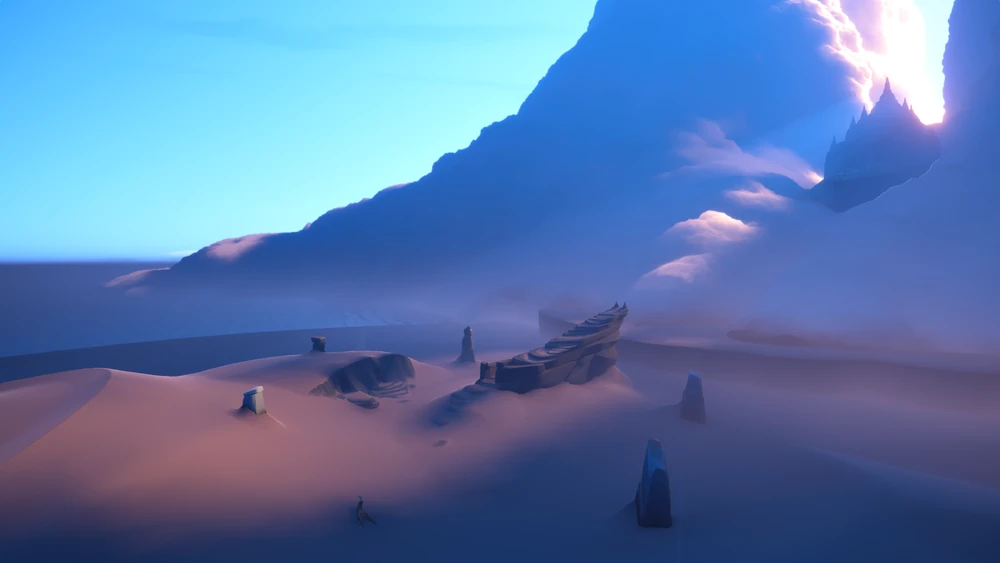
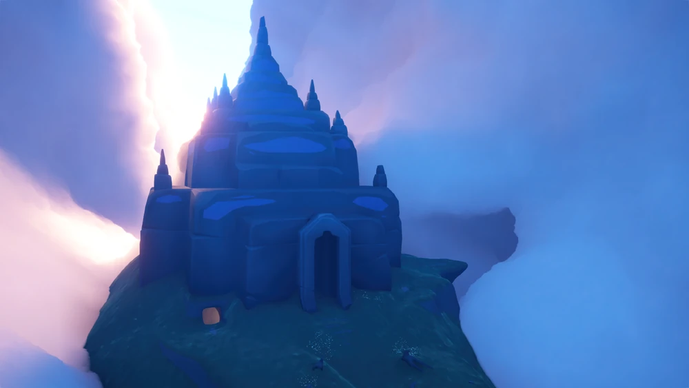
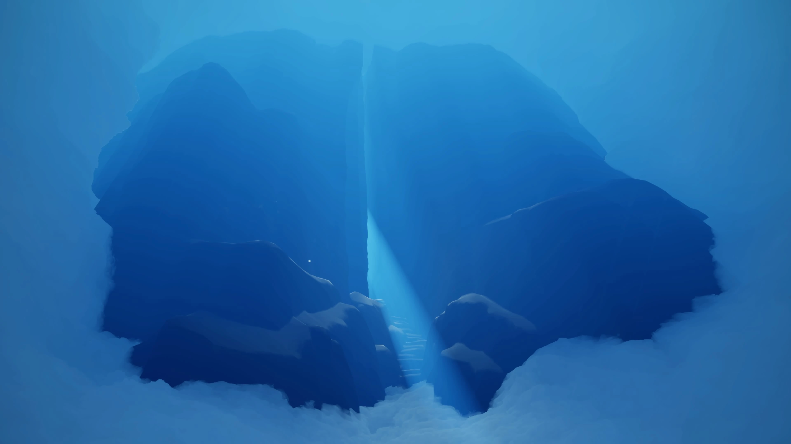
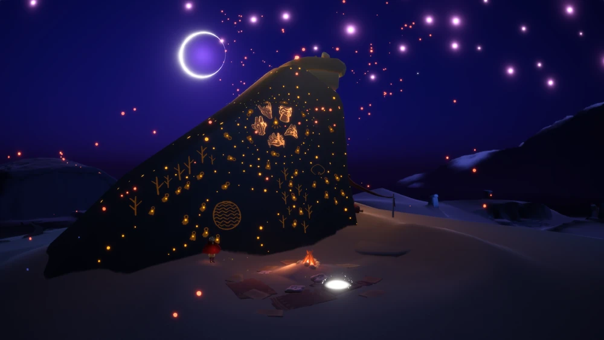

Introdução ao Reino
A Ilha do Amanhecer funciona como o berço de todas as crianças da luz. É um vasto deserto de areias suaves sob um céu matinal onde a jornada do jogador começa após a queda das estrelas.
Design
O visual é inspirado na manhã e na infância, utilizando tons de pêssego, rosa e azul. A arquitetura de barcos naufragados nas dunas sugere uma civilização antiga que colapsou após o uso excessivo da luz como fonte de energia.
Sonoplastia
A trilha sonora atua como narrador principal, guiando o jogador emocionalmente com sons minimalistas que transmitem a sensação física de "substância".
O Ancião
O Ancião Apontador representa o primeiro guia espiritual, introduzindo a missão de resgatar os espíritos ancestrais e devolver os fragmentos de estrelas à órbita.
Áreas Originais

1. Deserto de Areia
A planície onde a luz e o vazio se encontram pela primeira vez. Murais antigos nas cavernas mostram que as crianças da luz já existiam antes do cataclismo.
Zona de Spoilers
| Informações | ||
|---|---|---|
| Luzes Aladas | Espíritos Normais | Espíritos Sazonais |
| 3 | 2 | 3 |
Acesse a wiki oficial para mais informações ou o guia da região.

2. Templo do Amanhecer
Estrutura que guarda o altar do Ancião. Ao meditar aqui, o jogador completa seu primeiro ciclo de aprendizado e se prepara para o voo.
Zona de Spoilers
| Informações | ||
|---|---|---|
| Luzes Aladas | Espíritos Normais | Espíritos Sazonais |
| 0 | 1 | 0 |
Acesse a wiki oficial para mais informações ou o guia da região.
Temporadas e Áreas de Expansão

Temporada da Profecia
Introduziu a Caverna da Profecia; A temporada mergulha nas lendas sobre como os ancestrais tentaram dominar os elementos para sustentar sua civilização. As 4 "Provações" simbolizam também os desafios enfrentados pelos antigos para manter o equilíbrio entre a luz e a escuridão.
Zona de Spoilers
| Informações | ||
|---|---|---|
| Luzes Aladas | Espíritos Normais | Espíritos Sazonais |
| 4 | 0 | 4 |
Acesse a wiki oficial para mais informações ou o guia da região.

Temporada da Passagem
Introduziu a Pedra da Passagem; Pode ser interpretada como um rito de passagem para a adolescência, tratando de autodescoberta e do uso de máscaras sociais. A paleta muda para azul-marinho e prata, simbolizando a transição da infância para uma fase mais emotional.
Zona de Spoilers
| Informações | ||
|---|---|---|
| Luzes Aladas | Espíritos Normais | Espíritos Sazonais |
| 0 | 0 | 4 |
Acesse a wiki oficial para mais informações ou o guia da região.